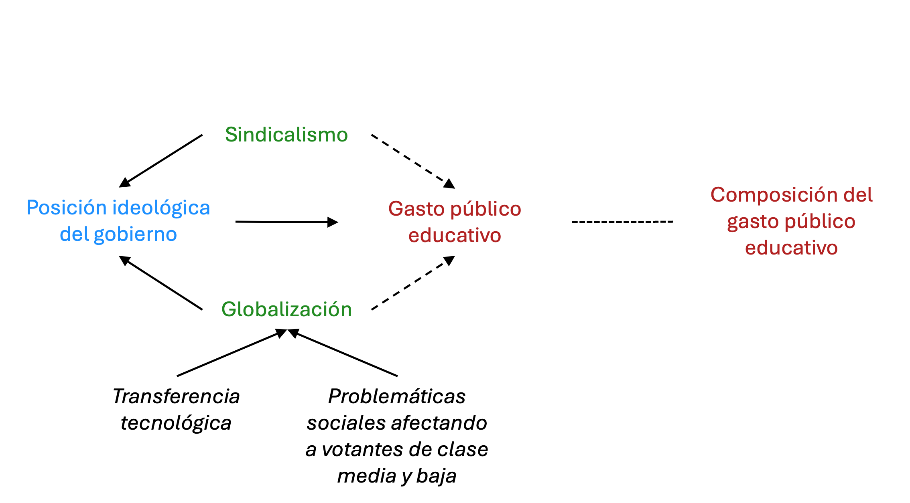

Formando la educación en Latinoamérica
La política del financiamiento educativo
Mtro. Pedro I. Rosas-Medina
Facultad Latinoamericana de Ciencias Sociales, México
Feb 21, 2025
Expansión del gasto público educativo
- ¿Qué explica el crecimiento sostenido del gasto público educativo entre países latinoamericanos desde la década de 1990?
- ¿Por qué algunos países eligieron expandir el financiamiento de sus sistemas en un momento, mientras otros optaron por reducirlo?
Educación básica prioritaria
- ¿Qué determina la priorización del financiamiento del subsistema de enseñanza básico sobre la formación superior, profesional, técnica o vocacional?
Explicaciones alternativas


Argumento
Argumento
Argumento
Hipótesis
Los gobiernos de derecha elevarán el gasto público educativo -reduciendo diferencias en niveles de financiamiento esperados en sus contrapartes de izquierda- en la medida en que la globalización se intensifique.
Los gobiernos de derecha priorizarán el financiamiento en niveles del subsistema de enseñanza básico, en la medida en que la globalización incremente.
Argumento
Argumento
Hipótesis (2)
Variables dependientes
- Gasto público educativo total:
- Proporción del PIB destinado al sector público educativo.
- Gasto público en el subsistema de enseñanza básica.
- \(\%\) PIB destinado a la educación inicial, preescolar, primaria y secundaria.
- Gasto público en la formación postsecundaria técnica, vocacional y superior.
- \(\%\) PIB destinado a los niveles formativos.
En los tres casos, se toma información del World Bank EdStats Portal.
Variables independientes
- Ideología política gubernamental:
- Globalización.
- Nivel en que un país se encuentra integrado a la economía global, en términos financieros y de comercio.
- KOF Economic Globalisation Index.
- Fuerza política sindical
Variables de control
- Presión demográfica hacia la provisión educativa.
- Proporción de la población menor a 15 años.
- World Bank EdStats Portal.
- Tamaño de la población.
- Logaritmo natural del total de habitantes de cada país.
- Banco Mundial.
- Desarrollo económico.
- PIB per cápita.
- Household Consumption Data and Statistics from the World Bank.
- Volatilidad económica sobre el gasto gubernamental.
- Tasa de crecimiento anual del PIB.
- Household Consumption Data and Statistics from the World Bank.
- Tendencia de consumo gubernamental.
- Gasto gubernamental público (proporción del PIB) excluyendo educación.
- Banco Mundial.
Modelo 1
\[ \small \color{firebrick}{Y_{it}^{j}} = \beta_{0} + \beta_{1}\color{dodgerblue}{Ideo_{it}} + \mathbf{X}_{it}\gamma + \alpha_{i} + \delta_{t} + \epsilon_{it} \]
- \(\color{firebrick}{Y_{it}^j}\): variable dependiente para el país \(i\) en el año \(t\).
- \(\color{dodgerblue}{Ideo_{it}}\): posición ideológica del gobierno \(i\) en el año \(t\).
- \(\mathbf{X}_{it}\): conjunto de variables de control.
- \(\alpha_{i}\): efectos fijos nivel país.
- \(\delta_{t}\): efectos fijos de tiempo.
Modelo 2
\[ \small \color{firebrick}{Y_{it}^{j}} = \beta_{0} + \beta_{1}\color{dodgerblue}{Ideo_{it}} + \beta_{2}\color{forestgreen}{Glb_{it}} + \beta_{3}(\color{chocolate}{Ideo_{it} \times Glb_{it}}) + \mathbf{X}_{it}\gamma + \\ + \alpha_{i} + \delta_{t} + \epsilon_{it} \]
- \(\color{firebrick}{Y_{it}^j}\): variable dependiente para el país \(i\) en el año \(t\).
- \(\color{dodgerblue}{Ideo_{it}}\): posición ideológica del gobierno \(i\) en el año \(t\).
- \(Glb_{it}\): nivel de globalización.
- \(\color{chocolate}{Ideo_{it} \times Glb_{it}}\): interacción entre ideología y globalización.
Modelo 3
\[ \small \color{firebrick}{Y_{it}^{j}} = \beta_{0} + \mathbf{\beta}^{\top}\mathbf{Z}_{it} + \beta_{4}(\color{chocolate}{Ideo_{it} \times Glb_{it} \times Sind_{it}}) + \\ \theta^{\top}\mathbf{W}_{it} + \gamma^{\top}\mathbf{X}_{it} + \alpha_{i} + \delta_{t} + \epsilon_{it} \]
- \(\color{firebrick}{Y_{it}^j}\): variable dependiente para el país \(i\) en el año \(t\).
- \(\mathbf{Z}_{it}\): es un vector de variables independientes principales (\(\color{dodgerblue}{Ideo_{it}}\), \(\color{forestgreen}{Glb_{it}}\) y \(\color{forestgreen}{Sind_{it}}\), con coeficientes agrupados en el vector \(\beta^{\top}\)).
- \(\beta_{4}\): es el coeficiente asociado a la interacción triple (\(\color{chocolate}{Ideo_{it} \times Glb_{it} \times Sind_{it}}\)).
- \(\mathbf{W}_{it}\): vector de interacciones dobles entre las variables principales.
- \(\mathbf{X}_{it}\): es un vector de variables de control.
Resultados
| A | B | C | |
|---|---|---|---|
| Ideología del gobierno | \(0.00\\(0.02)\) | \(0.00\\(0.02)\) | \(0.3 8^{*}\\(0.17)\) |
| Globalización | \(0.04\\(0.03)\) | \(0.1 1^{*}\\(0.05)\) | |
| Ideología \(\times\) globalización | \(0.0 1^{*}\\(0.01)\) | ||
\(^{***}p<0.001\); \(^{**}p<0.01\); \(^{*}p<0.05\).
Nota: Errores estándar robustos entre paréntesis.
Efectos marginales condicionales

Efectos marginales condicionales

Efectos marginales condicionales

Gasto entre niveles educativos
| Educación básica | Educación superior | |||||
|---|---|---|---|---|---|---|
| A | B | C | D | E | F | |
| Ideología del gobierno |
\(0.02\) \((0.01)\) |
\(0.02\) \((0.01)\) |
\(-0.06^{*}\) \((0.03)\) |
\(-0.00\) \((0.03)\) |
\(-0.00\) \((0.0)\) |
\(0.04^{*}\) \((0.02)\) |
| Globalización |
\(0.01^{*}\) \((0.01)\) |
\(0.00\) \((0.01)\) |
\(-0.01\) \((0.01)\) |
\(-0.01^{*}\) \((0.01)\) |
||
| Ideología × Globalización |
\(0.05^{***}\) \((0.05)\) |
\(-0.01^{*}\) \((0.00)\) |
||||
\(^{***}p<0.001\); \(^{**}p<0.01\); \(^{*}p<0.05\).
Nota: Errores estándar robustos entre paréntesis.
Efectos marginales condicionales

Resultados (3)
| A | B | C | D | E | |
|---|---|---|---|---|---|
| Ideología del gobierno |
\(-0.01\) \((0.02)\) |
\(0.00\) \((0.02)\) |
\(1.53^{**}\) \((0.58)\) |
||
| Globalización |
\(-0.00\) \((0.03)\) |
\(0.04\) \((0.05)\) |
\(0.36^{***}\) \((0.10)\) |
||
| Sindicalismo |
\(0.55^{***}\) \((0.16)\) |
\(-1.01^{**}\) \((0.37)\) |
\(14.88^{*}\) \((7.30)\) |
||
| Ideología \(\times\) globalización |
\(-0.03^{**}\) \((0.01)\) |
||||
| Ideología \(\times\) sindicalismo |
\(-1.29^{*}\) \((0.58)\) |
||||
| Globalización \(\times\) sindicalismo |
\(-0.27^{*}\) \((0.11)\) |
||||
| Ideología \(\times\) Globalización \(\times\) Sindicalismo |
\(0.02^{*}\) \((0.01)\) |
\(^{***}p<0.001\); \(^{**}p<0.01\); \(^{*}p<0.05\).
Nota: Errores estándar robustos entre paréntesis.
Efectos marginales condicionales (3)

Resultados (4)
| Educación básica | Educación superior | |||||
|---|---|---|---|---|---|---|
| A | B | C | D | E | F | |
| Ideología del gobierno |
\(0.01\) \((0.01)\) |
\(0.03\) \((0.23)\) |
\(-2.60^{*}\) \((1.15)\) |
\(0.00\) \((0.01)\) |
\(0.00\) \((0.01)\) |
\(-2.07^{*}\) \((0.91)\) |
| Globalización |
\(0.05^{*}\) \((0.25)\) |
\(-0.44^{*}\) \((0.20)\) |
\(0.07^{*}\) \((0.04)\) |
\(-0.41^{*}\) \((0.18)\) |
||
| Sindicalismo |
\(-1.06^{***}\) \((0.16)\) |
\(-33.53^{*}\) \((13.95)\) |
\(-1.84^{***}\) \((0.51)\) |
\(-34.19^{**}\) \((11.02)\) |
||
| Ideología × Globalización |
\(0.04^{*}\) \((0.02)\) |
\(0.03^{*}\) \((0.01)\) |
||||
| Ideología × Sindicalismo |
\(2.67^{*}\) \((1.11)\) |
\(2.16^{*}\) \((0.89)\) |
||||
| Globalización × Sindicalismo |
\(0.46^{*}\) \((0.20)\) |
\(0.48^{*}\) \((0.16)\) |
||||
| Ideología × Globalización × Sindicalismo |
\(-0.04^{*}\) \((0.02)\) |
\(-0.03^{*}\) \((0.01)\) |
||||
\(^{***}p<0.001\); \(^{**}p<0.01\); \(^{*}p<0.05\).
Nota: Errores estándar robustos entre paréntesis.
Efectos marginales condicionales (4)

Efectos marginales condicionales (5)

Estudio cualitativo
- Chile, México y Paraguay.
- Derecha en el gobierno, exceptuando Chile.
- Niveles de globalización muy similares.
Estudio cualitativo (2)

Estudio cualitativo (3)

Conclusiones
- El efecto de la posición ideológica gubernamental sobre el gasto es condicional.
- ¿Abrir la economía a los mercados internacionales entre gobiernos de derecha, es contraproducente hacia el gasto público educativo?
- Sí, pero solo sobre la proporción total del PIB destinado a la educación.
- La globalización condiciona a los gobiernos de derecha para expandir el gasto público educativo entre niveles del subsistema de enseñanza básico.
Conclusiones (2)
- ¿Y qué pasa con el sindicalismo?
- En un contexto de creciente globalización, bajo administraciones de derecha, la autonomía sindical sería contraproducente sobre el gasto público educativo total…
- Pero no sobre el financiamiento del subsistema de enseñanza básico.
Conclusiones (3)
- Entonces, ¿qué está sucediendo?
- Ralentizar el crecimiento del gasto público educativo total entre gobiernos ideológicamente de derecha, no implica -necesariamente- reducir la proporción del gasto entre niveles del subsistema básico.
- Mayor participación privada entre niveles superiores.